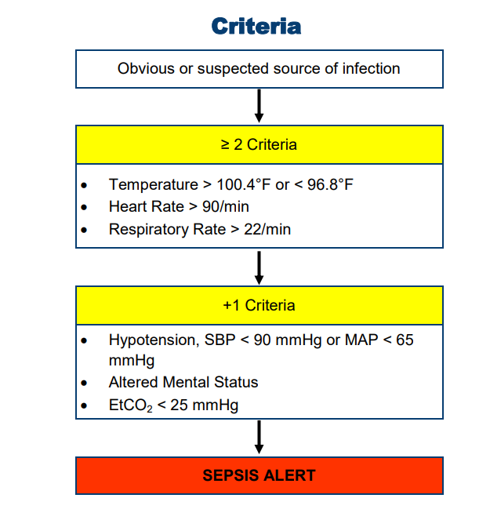

| History | Signs and Symptoms | Differential |
|---|---|---|
|
• Duration and severity of fever • Altered mental status • Past medical history • Medications / Recent antibiotics • Immunocompromised (Transplant, HIV, Diabetes, Cancer) • Recent hospitalization / Healthcare facility • Prosthetic device / Indwelling device • Last antipyretic (acetaminophen, ibuprofen) |
• Hyperthermia > 100.4°F (38°C) • Hypothermia < 96.8°F (36°C) • Tachycardia (HR > 90) • Tachypnea (RR > 22) • Hypotension (SBP < 100) • Altered mental status • Hyperglycemia / Hypoglycemia • Hyperthermia > 100.4°F (38°C) • Hypothermia < 96.8°F (36°C) • Tachycardia (HR > 90) • Tachypnea (RR > 22) • Hypotension (SBP < 100) • Altered mental status • Hyperglycemia / Hypoglycemia |
• Infections (UTI, pneumonia, skin/soft tissue, etc) • Cancer / Tumors / Lymphomas • Medication or drug reaction • Hyperthyroidism • Heat Stroke • Meningitis • Hypoglycemia / Hypothermia • MI • Stroke • Pulmonary embolism |

1.
UNIVERSAL PATIENT CARE.
a. Check blood glucose level. If blood glucose < 60 mg/dL refer
to
DIABETIC EMERGENCIES-HYPOGLYCEMIA
protocol for treatment.
2. Reassess patient and vital signs every 5 minutes. 3. Relay
information to incoming ambulance
1. Continue EMR TREATMENT.
2. If not practical for an intercept, notify receiving hospital of
“SEPSIS ALERT”.
3. Relay information to incoming ambulance and/or call for intercept
per
INTERCEPT CRITERIA
1. Continue EMT TREATMENT.
2. Notify receiving hospital of
“SEPSIS ALERT”.
3. Consider 12-Lead ECG.
4. Establish at least one large bore IV.
a. Administer
ISOTONIC SOLUTION (500 ml) fluid bolus (Document TOTAL amount of
IVF given).
i. Reassess after each 500 mL increment and STOP fluids if signs
of pulmonary edema (increasing shortness of breath or rales /
crackles on lung exam).
ii. May repeat to maintain SBP ≥ 90 mmHg or MAP ≥ 65 mmHg as long
as pulmonary edema is not suspected.
iii. Total amount of IVF should not exceed 2000 mL
5. For hypotension not responsive to fluid boluses, consider
NOREPINEPHRINE
2-30 mcg/min (if available, with IV pump) titrated to a SBP of 90-100
mmHg or MAP > 65 mmHg.
Alternative medication:
PUSH DOSE EPINEPHRINE
1 mL (10 mcg) IV/IO every 2-5 minutes to maintain
SBP of 90-100 mmHg or MAP > 65 mmHg.
a. Mix 1 mL of Epinephrine 1:10,000 with 9 mL of Normal Saline in
a 10 mL syringe resulting in a concentration of 10 mcg/mL.
-OR-
DOPAMINE
(5 - 20) mcg/kg/min titrated to a SBP of 90-100
mmHg or MAP > 65 mmHg.
5. Continue to reassess patient including vital signs (manual BP),
breath sounds, capnography, pulse oximetry, cardiac monitor.
PEARLS
• Sepsis is defined as a life-threatening
organ dysfunction caused by a dysregulated host response to
infection.
- In lay terms, sepsis is a life-threatening condition that arises
when the body’s response to an infection injures its own tissues and
organs.
• Septic Shock is a subset of sepsis in which
underlying circulatory and cellular / metabolic abnormalities
resulting in hypotension that require vasopressors to maintain a MAP
of ≥ 65 mmHg and having a serum lactate level of ≥ 2 mmol/L despite
adequate volume resuscitation, resulting in a higher risk of
mortality.
• Early recognition of Sepsis allows for attentive care and early
administration of antibiotics.
• Quantitative waveform
capnography
can be a reliable surrogate for lactate monitoring in detecting
metabolic distress in sepsis patients. EtCO2 < 25 mm Hg are
associated with serum lactate levels > 4 mmol/L.
• Aggressive IV fluid therapy is the most important prehospital
treatment for septic shock. Suspected septic patients should receive
repeated fluid boluses while being checked frequently for signs of
pulmonary edema, especially patients with known history of CHF or ESRD
on dialysis. STOP fluid infusion in the setting of pulmonary edema.
• ECG should be obtained with suspected sepsis, but should not delay
care in order to obtain.
| Height | Male | Female |
|---|---|---|
| 5' | 50kg | 46kg |
| 5'1" | 52kg | 49kg |
| 5'2" | 55kg | 40kg |
| 5'3" | 57kg | 52kg |
| 5'4" | 59kg | 55kg |
| 5'5" | 62kg | 57kg |
| 5'6" | 64kg | 59kg |
| 5'7" | 66kg | 62kg |
| 5'8" | 68kg | 64kg |
| 5'9" | 71kg | 66kg |
| 5'10" | 73kg | 69kg |
| 5'11" | 75kg | 71kg |
| 6' | 78kg | 73kg |
| 6'1" | 80kg | 75kg |
| 6'2" | 82kg | 78kg |
| 6'3" | 85kg | 80kg |
| 6'4" | 87kg | 82kg |
| 6'5" | 89kg | 85kg |
| KEY DOCUMENTATION ELEMENTS | PERTINENT ASSESSMENT FINDINGS |
|---|---|
|
• Sepsis criteria that patient met • Full vital signs with reassessment every 15 minutes • Neurologic status assessment • Documentation of fluid administration contains the type, volume, start time, and either a rate, duration or end time of the fluid administration |
• Full vital signs • Criteria for Sepsis • Findings of hypoperfusion: AMS, hypotension, EtCO2 < 25 mmHg |
| QUALITY METRICS |
|
• Advance hospital notification for suspected sepsis patients • Administration of IV fluid to suspected sepsis patients unless contraindicated |